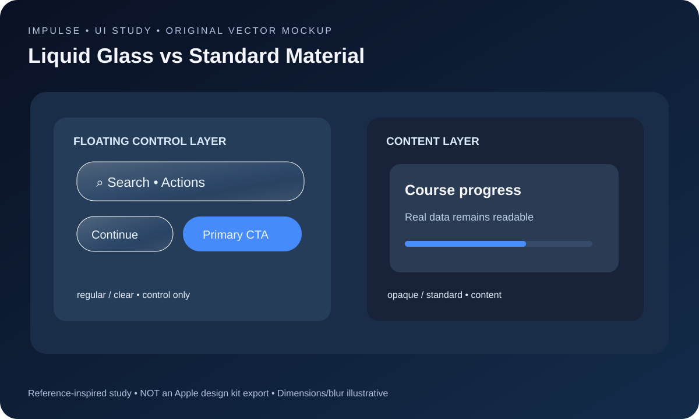
Apple UI kit references
Исследование визуального языка Apple для Impulse. Ни один локальный SVG не скопирован с Apple. Все оригинальные изображения Apple ниже загружаются с developer.apple.com и сопровождаются ссылкой на первоисточник; реальные слои Kit 27 не проверялись.
13 направлений и оригинальных векторных макетов
Местные SVG демонстрируют компоновку и визуальную иерархию, но не являются Apple UI Kit или доказательством совпадения пикселей.
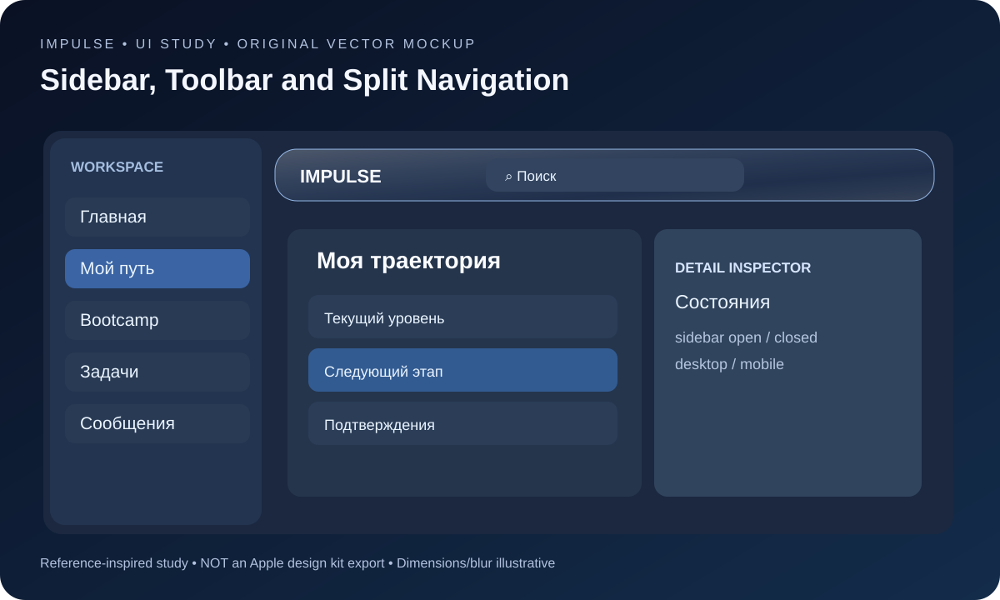
Sidebar / toolbar / tabs
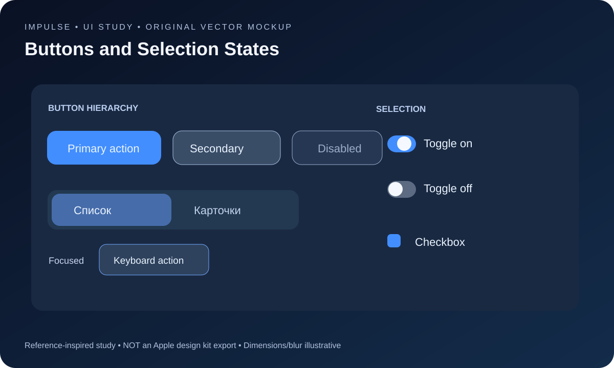
Buttons & selection
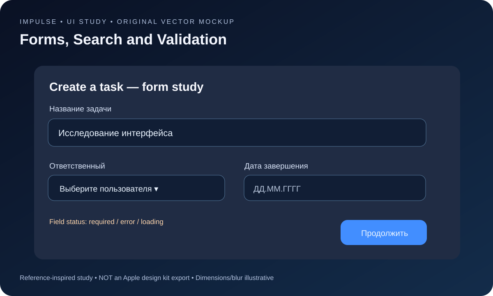
Forms & search
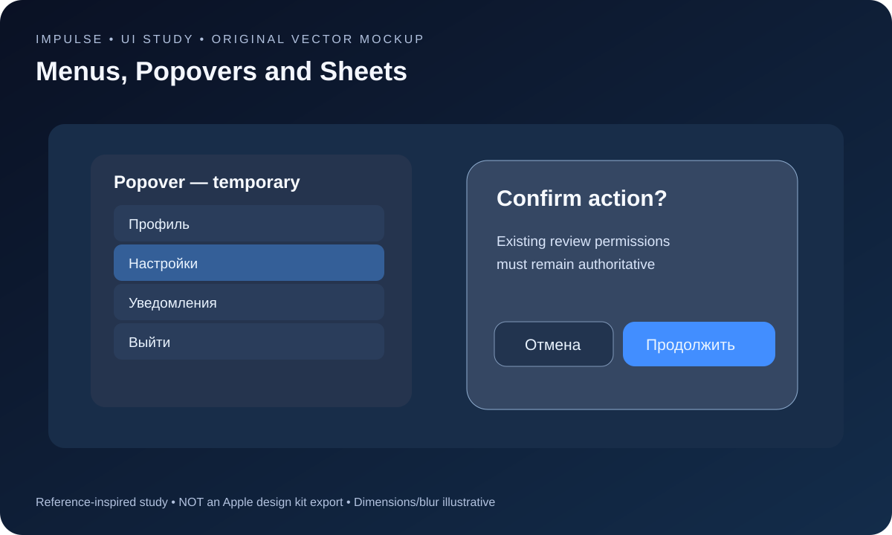
Menus & sheets
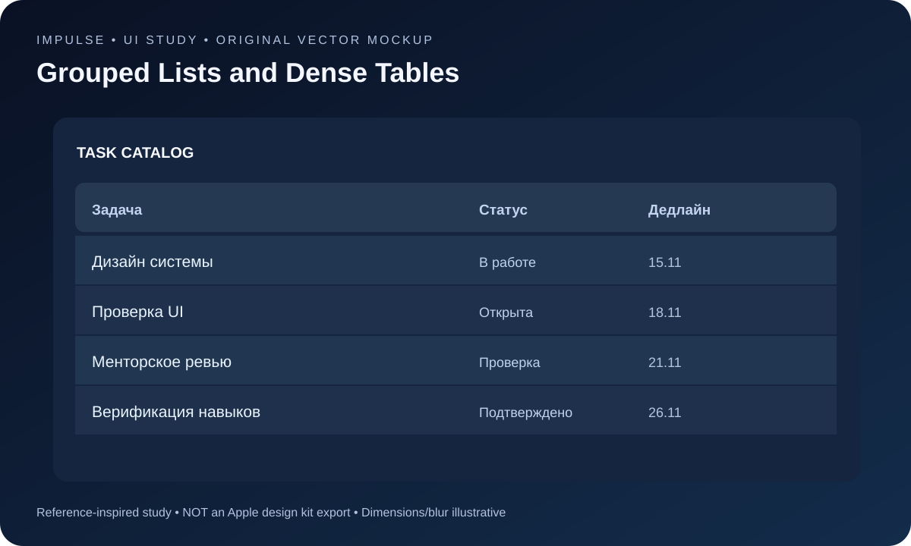
Lists & tables
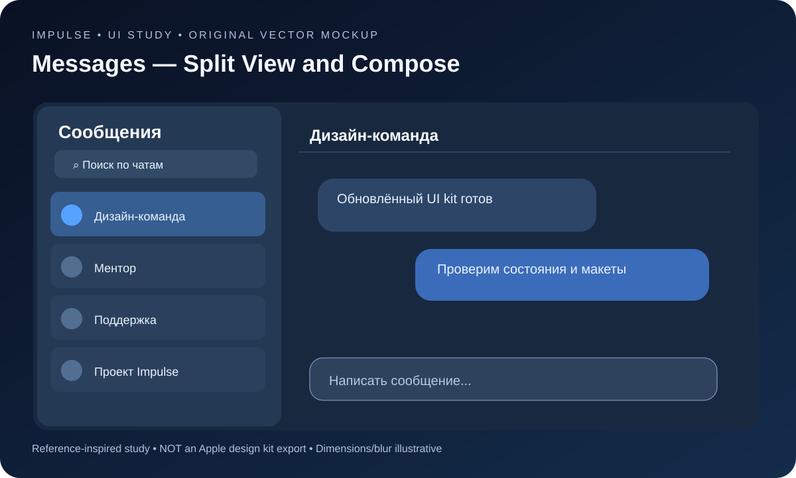
Messages & collaboration
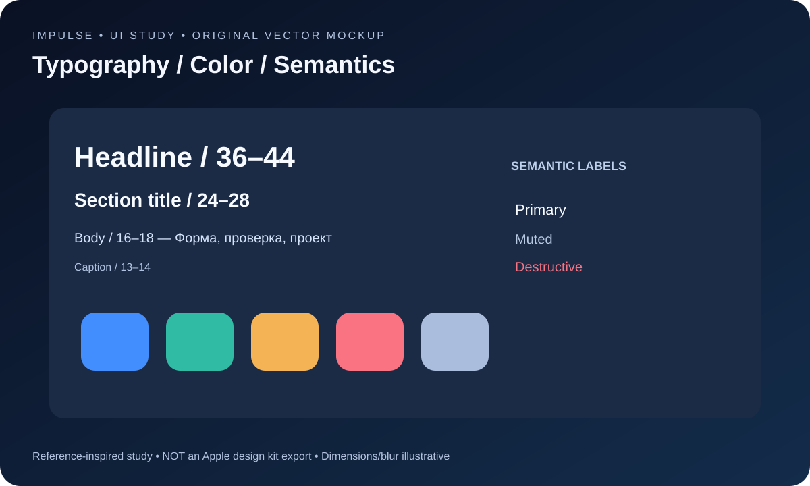
Typography & color
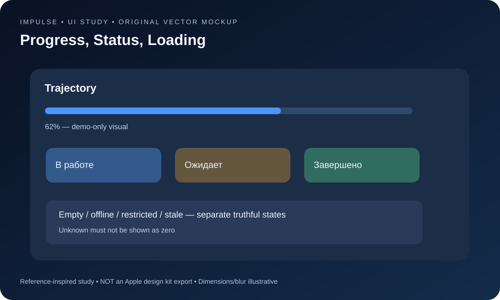
Progress & feedback
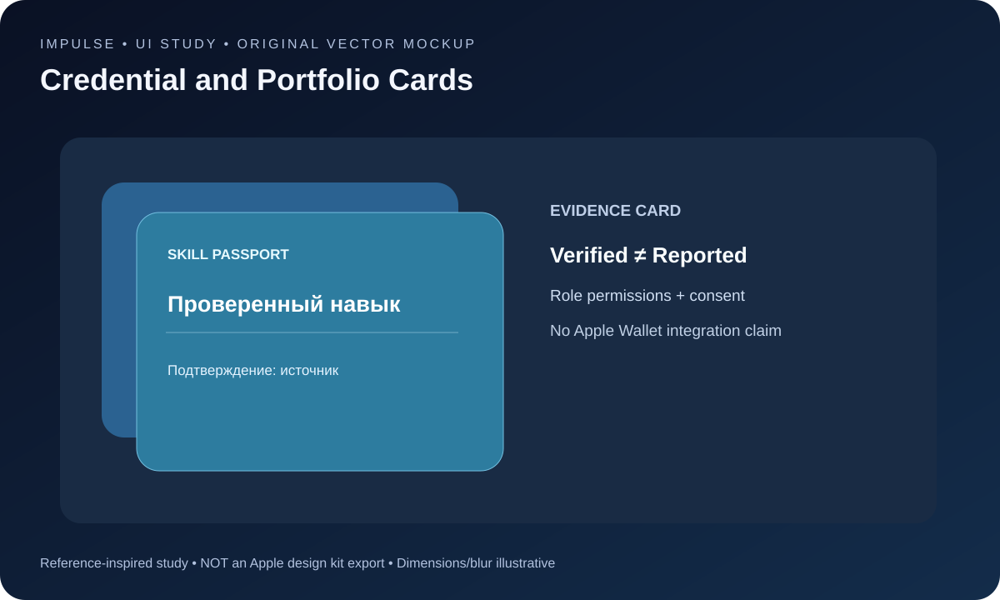
Portfolio & identity
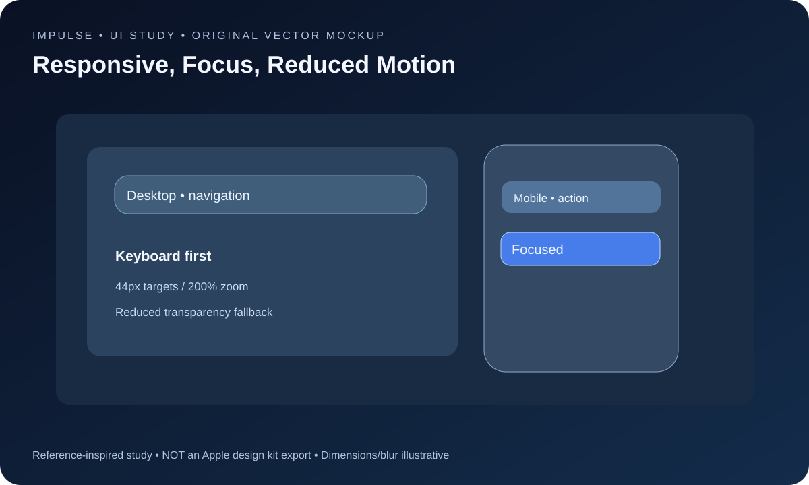
Motion & accessibility
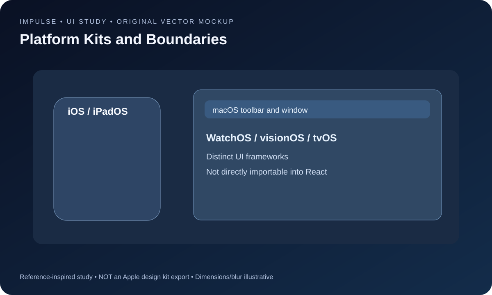
Native platform kits
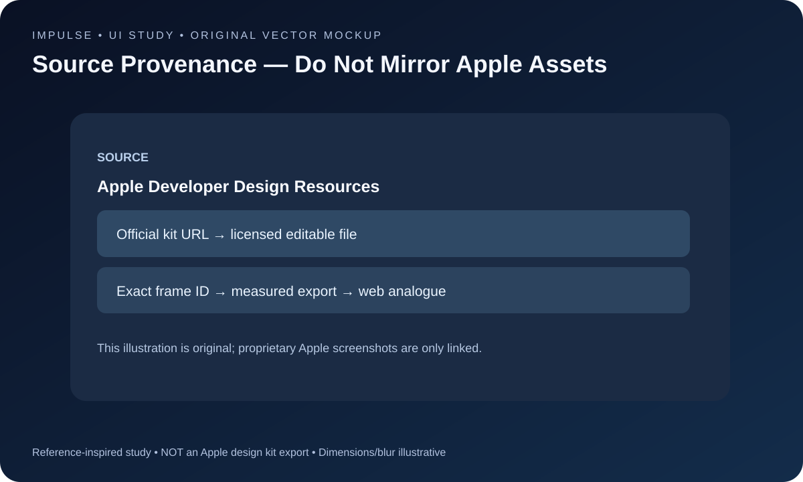
Official source traceability
Превью официальных материалов Apple
Remote thumbnails only: нет файлов Apple в Git. Для точного переноса нужны официальный дизайн-кит, выбранный frame/component и замеры всех состояний.


Детали: Оригинальные источники изображений · Ограничения лицензий · Процедура QA.